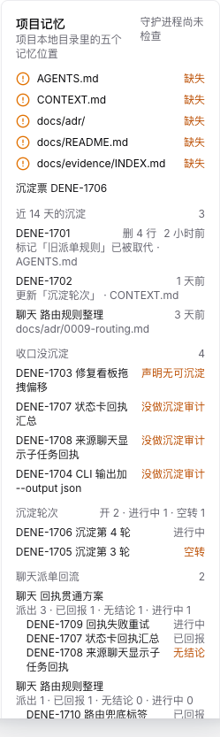
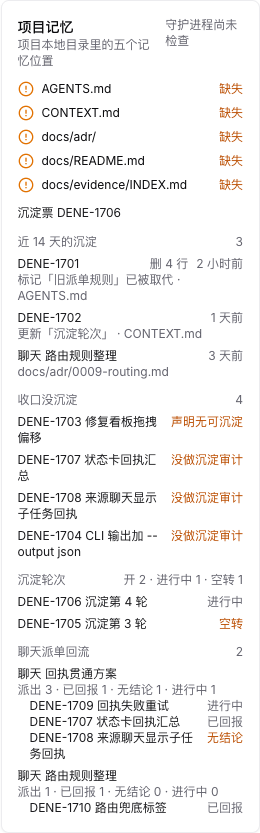
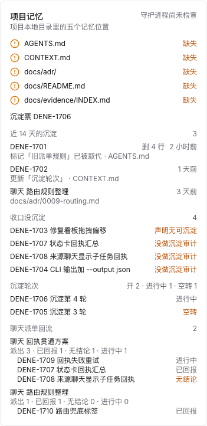
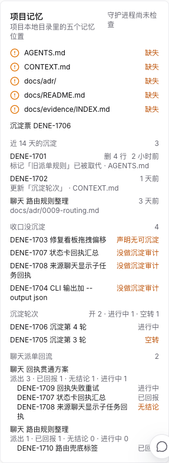
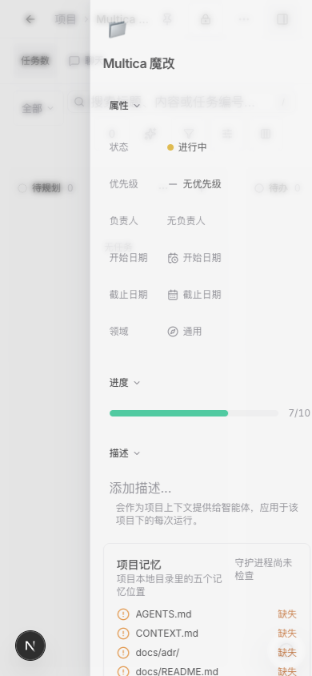
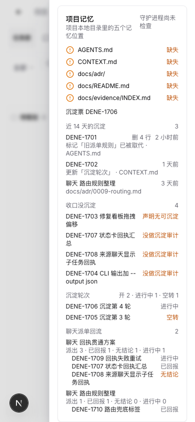
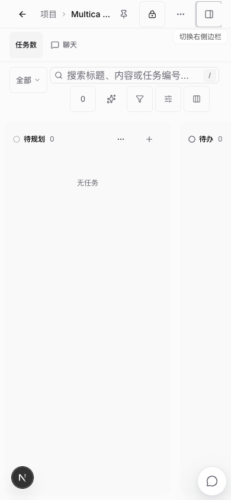
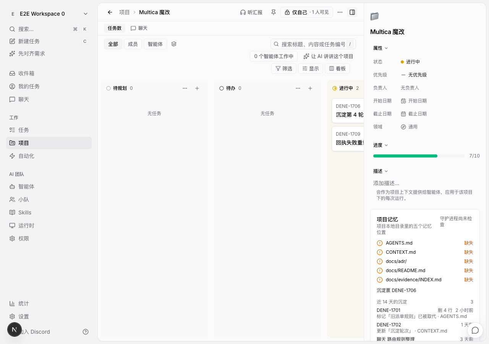
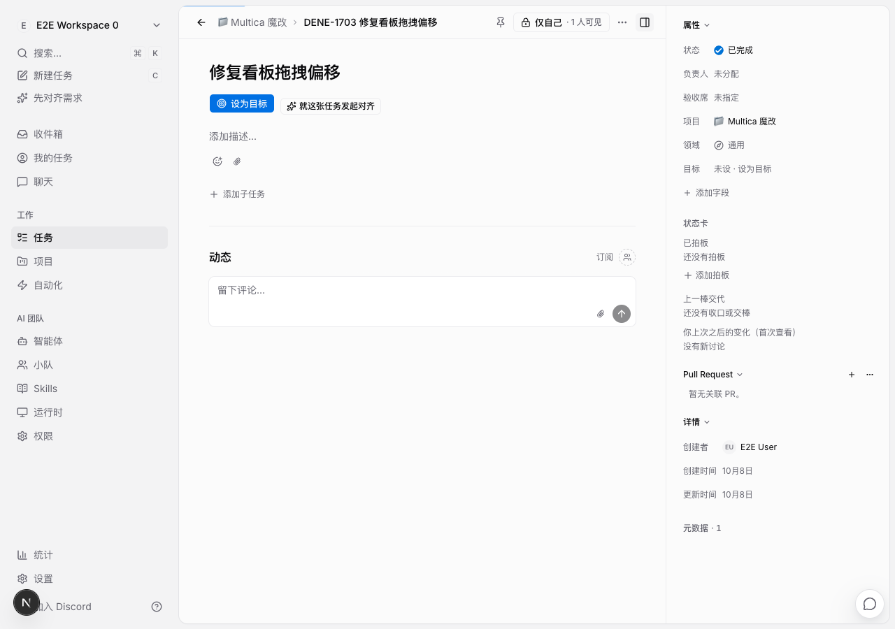
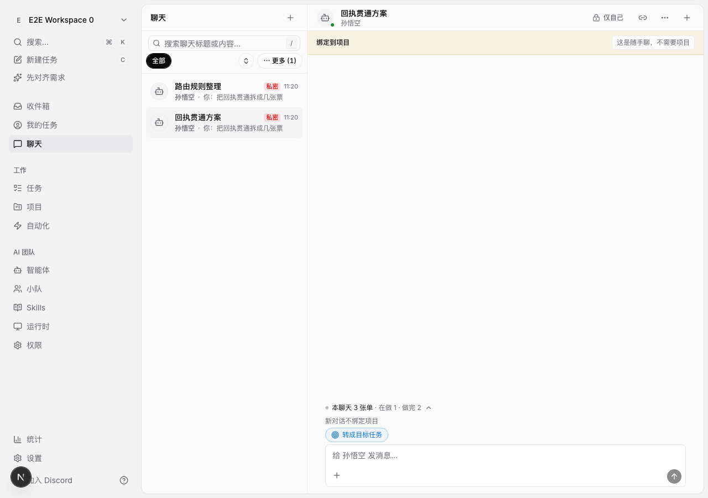

近 14 天的沉淀（含删除行数）、收口没沉淀、沉淀轮次与空转、聊天派单回流；每行点回来源票或聊天。截图来自本地真实页面，数据为示例。










Last 14 days (since 2026-09-24T16:22:56Z)
Writes (3):
2026-10-08T09:14:40-05:00 worker DENE-1701 agents:supersede「旧派单规则」 superseded: 旧派单规则 deleted lines: 4
2026-10-07T11:14:40-05:00 boss DENE-1702 context:update「沉淀轮次」
2026-10-05T11:14:40-05:00 worker chat 路由规则整理 adr
Finished without sediment (4):
2026-10-08T06:14:40-05:00 none DENE-1703 修复看板拖拽偏移
2026-10-08T11:14:40-05:00 unaudited DENE-1707 状态卡回执汇总
2026-10-07T11:14:40-05:00 unaudited DENE-1708 来源聊天显示子任务回执
2026-10-06T11:14:40-05:00 unaudited DENE-1704 CLI 输出加 --output json
Sediment rounds: 2 opened, 1 open, 1 idle
DENE-1706 worker in_progress 沉淀第 4 轮
DENE-1705 worker done (idle) 沉淀第 3 轮
Chat receipts (2 chats):
abbe1f99-9ec5-454c-8f14-e6fb063dfebe 回执贯通方案: 3 dispatched, 1 reported, 1 no conclusion, 1 open
DENE-1709 open in_progress 回执失败重试
DENE-1707 reported done 状态卡回执汇总
DENE-1708 no_conclusion done 来源聊天显示子任务回执
7d52ba1d-5639-454b-8ab3-9ed48b579c4b 路由规则整理: 1 dispatched, 1 reported, 0 no conclusion, 0 open
DENE-1710 reported in_review 路由兜底标签